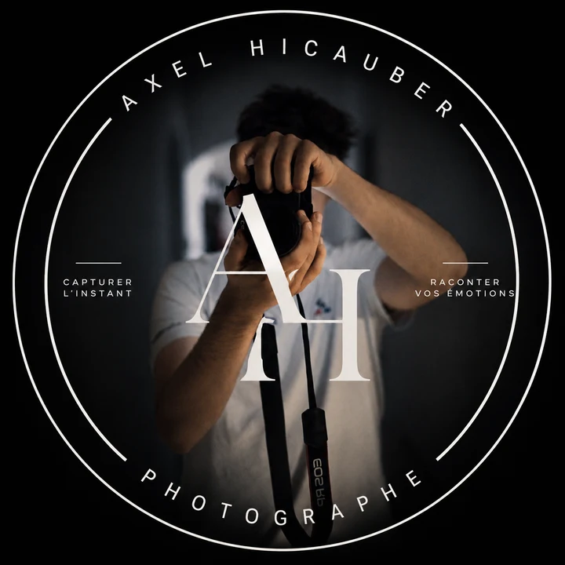

Anticiper
Lire le jeu pour être au bon endroit avant que l’action ne commence.
À propos

Axel Hicauber · Landes
Photographe sportif basé dans les Landes, je poursuis les gestes décisifs autant que les émotions silencieuses. Mon travail s’appuie sur l’anticipation, la proximité et une lumière qui laisse toute sa place à l’athlète.
Du bord d’un terrain de rugby à la ligne d’arrivée d’une course cycliste, je construis des images fortes pour les clubs, les athlètes, les organisateurs et les marques.
Lire le jeu pour être au bon endroit avant que l’action ne commence.
Saisir la tension, la joie et les détails qui racontent le vrai récit.
Une sélection cohérente, soignée et prête à vivre sur tous vos supports.
Votre histoire